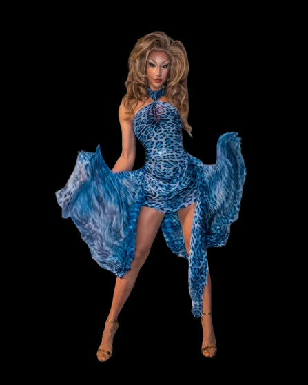

Ich bin Karlie Kant, Dragqueen aus Berlin, established 2017 – immer gut gekleidet, immer gut gelaunt!
 Ich – Dragqueen, Moderatorin und Entertainerin aus Berlin.
Sie planen ein Event? Eine Gala, Firmenfeier, Hochzeit, CSD oder Schiffstaufe?
Dann holen Sie sich Glamour, Witz und unvergessliche Unterhaltung auf die Bühne – mit mir.
Ob Beyoncé, Céline, Knef, Shirley, Britney oder Whitney – ich verkörpere sie alle.
Wann ich das nächste Mal live zu sehen bin?
✨ Hier ✨ geht’s zu den Daten.
KANTASTIQUE
Hertha trifft Haute Couture – und alle flippen aus. Meine erste eigene Show – geboren aus dem Drang, nach der Pandemie Drag Artists in Berlin Auftrittsmöglichkeiten zu bieten. Seitdem verwandeln wir das Keglerheim in Neukölln alle zwei Monate in einen Drag-Hotspot.
PROVOKANT
Saarbrücken – mein queerer Heimathafen (und ich bin die AIDA). Mit Provokant wollte ich etwas von der Energie, die ich durch Drag gefunden habe, in meine Heimat zurücktragen. Unsere Sommer- und Winter-Show im Jules Verne ist heiß begehrt – und hat einen kleinen queeren Kulturboom in der Stadt ausgelöst: etwa mit Drag Habibi, dem Show Format meiner Drag-Tochter Twiga.
DÜNN & DOOF
Ob Märchenwald, Toxic Masculinity, Saints & Sinners oder True Crime – kein Thema ist zu groß für diesen Drag-Fiebertraum. Zusammen mit Yvonne Nightstand habe ich Brunch-Editionen, Dinnerevents und sogar eine Show in einer echten Kirche umgesetzt. Wir sind mit dem Format mittlerweile auch über Berlins Grenzen hinaus unterwegs.
Plastic Productions x Kantastique
PPxK war ein einmaliges Crossover zwischen Kunst und Drag, zwischen durchinszenierter Show und ungefiltertem Ausdruck.
Plastic Productions wurde von Johanne Björklund Larsen gegründet – einer meiner engsten Freundinnen und einer radikalen Stimme im Bereich Performancekunst. Was sie mit PP begonnen hat, war nie einfach nur Bühne, sondern immer auch Statement.
Mit PPxK haben wir genau diesen Geist weitergeführt: ein Abend mit queeren Performer*innen, die nicht nur unterhalten, sondern herausfordern. Drag, Tanz, Körper, Haltung – live, roh, und voller Energie.
Private Veranstaltungen:
Geburtstag? Hochzeit? Schiffstaufe? Mit Hammer-Looks, fantastischen Nummern und natürlich Humor sorge ich für Applaus und Abriss – denn jede Party ist besser mit einer Drag Queen.
Corporate Events:
Firmenfeier, Podiumsdiskussion, Produktlaunch oder Team-Event? Ich bringe Ihre Gäste zum Lachen, Staunen und Denken – ob als charmante Moderatorin, Icebreaker oder Showeinlage.
Technik & Buchung
Keine Technik vor Ort? Kein Problem! Ich kann Sound, Mikrofon, Licht und sogar eine mobile Bühne mitbringen.
Sie kümmern sich um Ihre Gäste – ich um den Rest.
Ich moderiere regelmäßig das Rahmenprogramm des CSD Saarbrücken im Auftrag des LSVD Saar. Neben meinem “Dayjob” als Projektleiterin in einem internationalen Medienunternehmen engagiere ich mich dort in der LGBTIQA+ AG – und kämpfe für Sichtbarkeit und Gleichstellung, intern wie extern. Seit meiner Anti-Bias-Ausbildung 2020 arbeite ich zudem mit der Agentur IN-VISIBLE zusammen und gebe Workshops rund um Diversity und diskriminierungssensibles Arbeiten.
Oder schreiben Sie mir auf Instagram: @karliekant